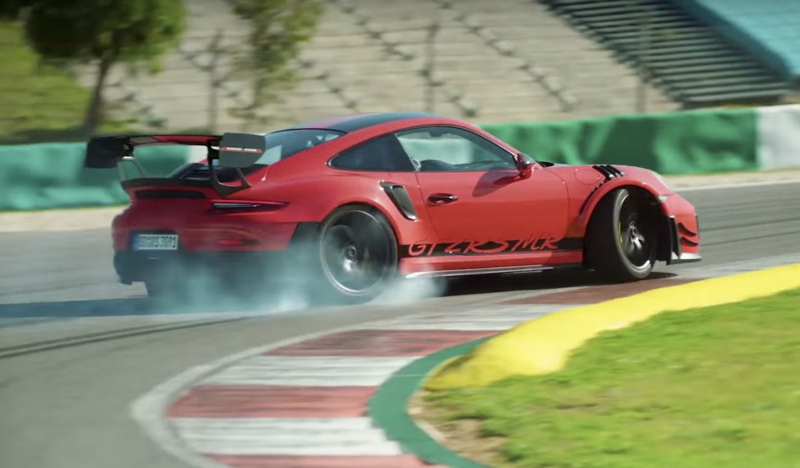
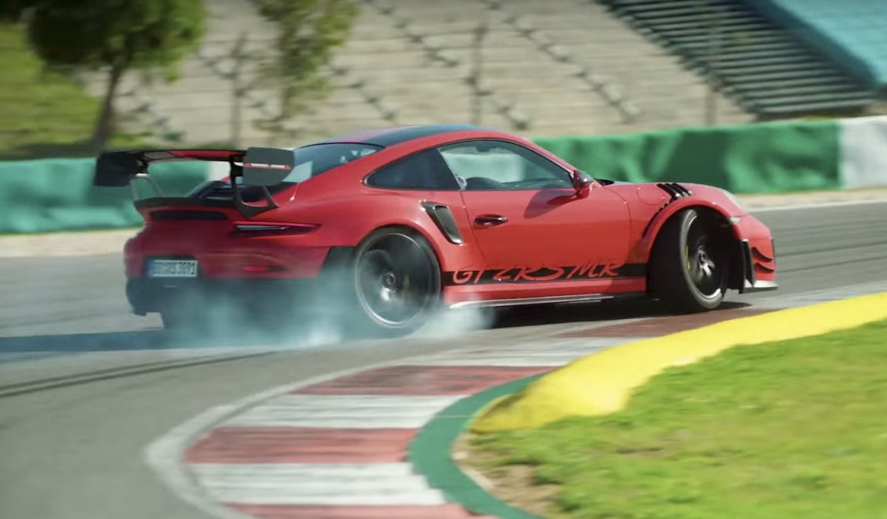

#2 Porsche 911 GT2 RS MR
Porsche 911 GT2 RS MR to jeden z najszybszych i najpotężniejszych samochodów sportowych na świecie. Jest to hołd dla tradycji Porsche i jednocześnie wyraz nowoczesnej inżynierii.
Specyfikacje
Porsche 911 GT2 RS MR imponuje swoimi osiągami i specyfikacjami. Oto kilka kluczowych informacji:
- Moc: 700 koni mechanicznych
- Silnik turbodoładowany o pojemności 3.8 litra
- Maksymalna prędkość: Ponad 340 km/h
- 0-100 km/h: W około 2,7 sekundy
Osiągnięcie na Nürburgring
Porsche 911 GT2 RS MR ustanowił imponujący rekord na torze Nürburgring Nordschleife jako najszybszy samochód produkcyjny z czasem 6:43.300 minuty. To świadczy o niesamowitych zdolnościach tego samochodu na jednym z najbardziej wymagających torów wyścigowych na świecie.
Design
Design Porsche 911 GT2 RS MR to połączenie sportowej agresji z elegancją. Samochód posiada charakterystyczne cechy marki Porsche, takie jak okrągłe reflektory i charakterystyczny kształt nadwozia. Jednocześnie, aerodynamiczny pakiet i sportowe detale nadają mu agresywny wygląd.

 
